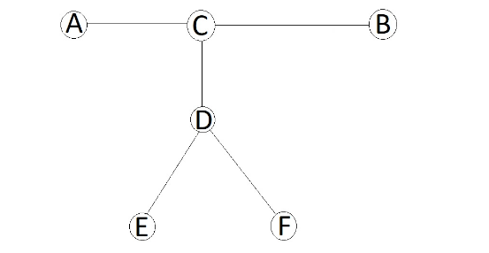

WC 赛前训练日志 1
文章目录
Yet Another DAG Problem
给出一个个点条边边带权 DAG，构造序列使得
- 。
- 。
并最小化。
。
状压
首先这题可以 LP，但鉴于较小，有点大材小用。考虑状压。
由于是 DAG，我们将它整理为分层图的形式，相邻层的距离为。把代价拆分到相邻层上即可。
设表示，（的导出子图）的最小代价。转移时我们枚举下一层的点集，使得不相交且
- ，要么是一个入度为的点，要么。
新增的代价就是跨过的边权的和：
在 DP 的过程中构造方案即可。
复杂度，有一些预处理。
Roads and Ramen
给出一棵个点的无根树，边有黑白两种颜色。有次操作，每次操作选择一条边反转它的颜色。每次操作后求黑边个数为偶数的最长简单路径的长度。
。
直径
有两个做法。一个是性质做法，一个是套路做法。
算法一

假设树的直径是 AB。
那么若 AC 和 BC 奇偶性相同，则答案就是 AB。
否则假设最优解是 EF。那么有 CE 和 CF 的奇偶性相同。因为 AC 和 BC 奇偶性不同，不妨假设 AC 和 CE 奇偶性相同。因为 AB 是直径，所以，所以，所以。因此选 AE 不劣。
另一种，然后，的情况也可以类似地证明。证明的关键点是和奇偶性相同，而，奇偶性不同。
这样我们就证明了，存在端点是直径端点的最优解。那么维护两棵树的到根路径最优解即可。这个很容易维护。
时间复杂度。
算法二
如何求直径？设表示深度。那么我们要求的就是。但是不是一个容易求的东西。考虑欧拉序。那么一定在到的欧拉序中出现过。因此直径就转化为了。
考虑线段树。对区间维护，和。然后两个区间合并一下即可。
对于本题，加一个奇偶性讨论上去即可。
时间复杂度。
防御工事
给出一个个点条边的连通图。次询问：
第次询问给出个点。要求你在图上选择一个点使得：等概率随机选择不是的个点中的一个点，这个点中存在不经过到达的路径的点的个数的期望最大。
输出这个最大的期望乘上的值。
。
圆方树 虚树 换根 DP
建出圆方树。能不经过到达等价于圆方树上能不经过到达。
以为根。称询问的点是关键点。则不能（不经过）到达的点有且仅有子树中的点。
因此圆方树上建虚树，虚树上换根即可。
时间复杂度。
微信步数
考虑维空间里的一个超立方体空间（以下简称空间）。给出一个长度为的二元组序列满足，称为行动序列。
对于一次从出发的行动，我们会循环执行行动序列，第步我们会执行二元组代表的行动，即，直到走出了空间就停止。
求以空间中的每个点为起点行动的步数的和。
。
rounding box 高维空间 差分 自然数幂
对于一个行动序列，定义它的 rounding box 是每一维坐标在变化过程中的极差区间构成的超立方体空间，定义它的行动向量是每一步行动的向量和。感性理解一下。
用两个向量（减向量）和（增向量）表示整个行动序列的 rounding box，其中表示第维坐标的最大减量，表示最大增量。同时用表示它的行动向量。
为了方便叙述和实现，我们先对行动序列处理一下，使得的每一维都非负。直观的说，让的方向指向“右上角”。这样的变换不影响答案。
考虑走不超过步就走出场地的点。可以枚举，计算走恰好步走出空间的点数，也就是【前步的 rounding box 在空间内】的点数减去【前步的 rounding box 在空间内】的点数。
接下来考虑不属于上述类的点。
行动的过程可以概括为：从起点出发，先走若干次（可能为）行动向量到达一个点，然后走步（）走出空间。
为什么要这么分类
如果我们将行动过程概况为：从起点出发，先走次（可能为）行动向量到达一个点，然后走步（）走出空间。
那么就会发现：当和对应的的点集之间的关系不能简单地用的信息表示，因此难以合并计算。
接下来考虑的分布。固定。
要求从点恰好在步走出空间，合法的的个数相当于【前步的 rounding box 在空间内】的点数减去【前步的 rounding box 在空间内】的点数。差分的分布，将问题转化为：分布在一个超立方体内，求所有的贡献和。
考虑分布在【走步的 rounding box】的的贡献。一个的贡献可拆分为：
- 从走步走出边界的贡献和。
- 从走到的贡献和。
容易发现，【走步的 rounding box】的减向量与原行动序列的减向量相同，仍是。用表示其增向量。
则的限制是。
第一部分
为了计算从走步走出边界的贡献和，我们要先考虑有多少个能走到。
考虑固定，计算有多少个可以到达的起点。那么的限制是（），此外（）。这样的的个数是
考虑从走步走出边界的贡献和，即：
记。上式可以化简为。
化简过程
考虑如何计算上式。容易发现当存在时整个式子的值就是。因此可以把去掉。
设，则上式可以化简为。
连乘积可以看作一个关于的次多项式，则可以化简为。
后者是个次前缀和的式子。可以预处理计算。
计算过程
设。考虑差分，定义（）。差分次，就会变成常数序列。
那么用计算对的贡献即可。容易发现这是个格路计数问题。
因此可以预处理计算。
第二部分
考虑从走到的贡献和。枚举走了轮行动序列到（即）。同时我们要求，因此贡献和为
化简得到。
化简过程
可以用与第一部分类似的方法处理。
算上枚举的复杂度，总复杂度。
烟花表演
给出一棵个点边带权的有根树。要求改变边的长度使得所有叶子结点的深度相同。将一条长度为的边改成的代价是（）。
。
凸函数 拐点 可并堆 DP
设表示将结点子树的叶子到的距离调整为的最小代价。用表示的儿子结点集合，那么我们可以将转移过程分成两个部分：
- 把连一条长度为的边到它的父亲。即设表示把的儿子调整到的父亲距离为的最小代价，那么。
- 将的儿子的贡献合并：。
为了高效维护这两种操作，我们需要重点分析第一个转移的性质。
感性理解一下，其实是个绝对值函数的“和”，可以认为具有凸性（下凸壳）。算法的过程会证明这一点，因此我们先认为它是对的。
同样显然的是，是个直线围成的凸壳，直线的斜率是整数。
分析的转移。为了方便叙述，省略下标。
固定，则取到最小值当且仅当。另一方面，不妨设的最小值区间是。
注意到绝对值函数顶点两边的斜率是和，而函数左边的斜率，右边的斜率。换言之我们应当优先满足的最优性再考虑绝对值函数的最优性。
对于转移式
- 当时，为最小值的条件是。因此有。
- 当时，为最小值的条件是。而注意到，因此当时取到最小值，绝对值函数取到极小值，即。
- 当时，让可以使和绝对值函数同时取到最小值，则。
- 当时，让可以使取到最小值，此时绝对值函数取到极小值，则。
接下来考虑怎么维护。
上述过程的实质是平移、加一段斜率为的直线、将凸壳的右边替换为斜率为的直线。
考虑用可重集维护拐点的横坐标。一个拐点会导致其右边的斜率加。再维护一下最后一个拐点右边的斜率，就可以表示整个凸包了。
对于第一种转移，我们只需要找到一个和（不唯一，唯一），然后将右边的拐点删掉，将和分别变成即可，然后把改成。将一个变成相当于加一段斜率为的直线。
对于第二种转移，相当于点值相加，那么合并可重集，相加即可。
为了维护上述可重集，我们还需要支持：找到和。这个并不难。由于一个拐点会导致其右边的斜率加，而我们知道最后一个拐点右边的斜率，那么我们可以删除横坐标最大的个拐点就可以找到，然后再删就可以找到。
一个拐点右边的斜率恰好等于的儿子数，因此复杂度有保证。
最后考虑如何计算答案。我们知道等于边长之和，这样就可以计算出处的点值了。
不妨用可并堆维护可重集。时间复杂度。
硬件包管理器
有个三元组和个限制，第个限制形如，表示要求将区间的三元组的调整为。将调整为的代价是。
求满足所有限制的最小调整代价。
。
凸函数 拐点 可并堆 DP
限制可以处理成树形结构。接下来就和烟花表演的思路类似了。
设表示让子树的都的最小代价。有
- 。
- 。
第二个转移可以理解为，给加上一个类绝对值函数，然后把斜率小于的部分改成水平直线。
相当于加一个横坐标为的拐点。
这次我们用二元组表示拐点的横坐标以及这个拐点对斜率的增量。就可以用可并堆维护了。
这题的可并堆是小根堆。求答案的时候用减掉差值。
寿司早餐
给出个位线性基，问他们的张成空间的并（去重）的第大。
。
线性基 线性基合并 容斥
数理题。
记线性基张成的线性空间为。
我们要求的是中的第大。
可以转化为，枚举，固定前缀，求中以为前缀的向量的个数。
计数问题可以容斥，则枚举的子集，求中以为前缀的向量的个数。
引理 1：两个线性空间的交仍是线性空间。
证明
对于两个线性空间，如果向量满足，则有，，则。
因此问题转化为如何求两个线性空间交的线性基。
引理 2：对于两个线性基，设，即中能被表示的向量基。若，即与线性无关，则是的一组线性基。
设，。
证明
不妨设（）。
对于任意向量，能被和分别表示。
假设，那么。
式子的左边是用和表示的，式子的右边是用表示的。
由于可以被表示，因此左边可以只用表示。
因为与线性无关，因此等式右边必须为，否则等式不可能成立。
注意到这个等式是对任意成立的。换言之对任意都有等式的右边为。
因此（），因此，即可以被表示，即。
因此。
但问题在于，对于两个线性基，并非总是存在使得与线性无关。因此我们需要构造一个线性基，使得且对于，有与线性无关。
设。对于：
- 如果它能被线性表出，那么随便取一种表出方案，设，那么令。
- 否则，令。
构造的正确性
首先证明与线性无关。
这是显然的。因为，因此这些基与可以合并成一个线性基。而一个线性基的划分显然是互相线性无关的。
接下来证明能被表示（相当于证明是合法的线性基）。容易发现可以用和表示。当时始终有，使用归纳法可以证明能被表示。
实现上述构造算法的时候，我们维护构成的线性基，并维护中的每个向量是中哪些向量的和（一种方案即可），用二进制数表示。
已知线性基求张成空间中前缀为的向量个数可以计算。
直接枚举的子集容斥的复杂度是。从去掉最后一个数的基转移可以优化到。预处理出线性基后容斥的复杂度是，因此总复杂度。
修订记录
- 2021年2月11日 第8次修订
- 2021年2月11日 第7次修订
- 2021年2月10日 第6次修订
- 2021年1月22日 第5次修订
- 2021年1月12日 第4次修订
- 2021年1月12日 第3次修订
- 2021年1月11日 第2次修订
- 2020年10月11日 创建文章